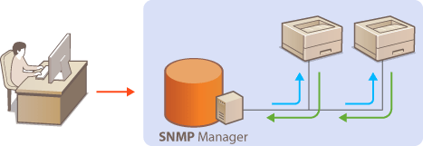
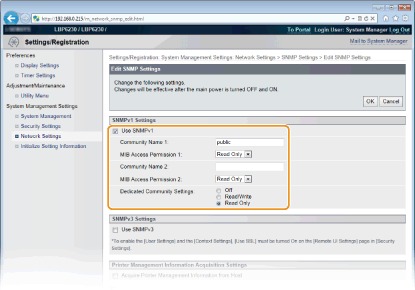
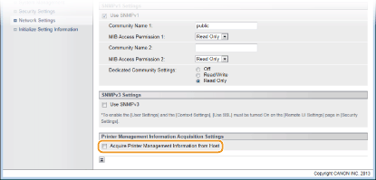
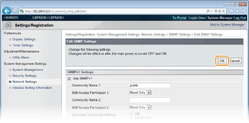

Monitoring and Controlling the Machine with SNMP
Simple Network Management Protocol (SNMP) is a protocol for monitoring and controlling communication devices in a network by using a Management Information Base (MIB) database. The machine supports SNMPv1 and security-enhanced SNMPv3. They allow you to check the status of the machine from a computer when you print documents or use the Remote UI. You can enable either SNMPv1 or SNMPv3, or both at the same time. Specify the settings for each version to suit your network environment and the purpose of use.

SNMPv1
SNMPv1 uses data called a "community string" (in effect a kind of password) to define the scope of SNMP communication. Because this information is exposed to the network in plain text, your network will be vulnerable to attacks. If you want to ensure network security, disable SNMPv1 and use SNMPv3.
SNMPv3
With SNMPv3, you can implement network device management that is protected by robust security features. Use the Remote UI to make settings. Before starting, enable SSL (Enabling SSL Encrypted Communication for the Remote UI).
 |
|
The machine does not support the trap notification feature of SNMP.
To change the SNMP port numbers Changing Port Numbers
SNMP management software enables you to configure, monitor, and control the machine remotely from the computer where the software is installed. For more information, see the instruction manuals for your management software.
|
1
Start the Remote UI and log on in System Manager Mode. Starting the Remote UI
2
Click [Settings/Registration].

3
Click [Network Settings]  [SNMP Settings].
[SNMP Settings].

4
Click [Edit].

5
Specify SNMPv1 settings.
If you do not need to change SNMPv1 settings, proceed to the next step.

[Use SNMPv1]
Select the check box to enable SNMPv1. You can specify the rest of the SNMPv1 settings only when this check box is selected.
Select the check box to enable SNMPv1. You can specify the rest of the SNMPv1 settings only when this check box is selected.
[Community Name 1]/[Community Name 2]
Enter up to 32 alphanumeric characters for the name of the community.
Enter up to 32 alphanumeric characters for the name of the community.
[MIB Access Permission 1]/[MIB Access Permission 2]
For each community, select [Read/Write] or [Read Only] for the access privileges to MIB objects.
For each community, select [Read/Write] or [Read Only] for the access privileges to MIB objects.
|
[Read/Write]
|
Allows both viewing and changing the values of MIB objects.
|
|
[Read Only]
|
Allows only viewing the values of MIB objects.
|
[Dedicated Community Settings]
Dedicated Community is a preset community, intended exclusively for administrators using Canon software, such as imageWARE Enterprise Management Console. Select [Off], [Read/Write] or [Read Only] for access privileges to MIB objects.
Dedicated Community is a preset community, intended exclusively for administrators using Canon software, such as imageWARE Enterprise Management Console. Select [Off], [Read/Write] or [Read Only] for access privileges to MIB objects.
|
[Off]
|
Do not use the Dedicated Community.
|
|
[Read/Write]
|
Allows the Dedicated Community to both view and change the values of MIB objects.
|
|
[Read Only]
|
Allows the Dedicated Community to only view MIB objects.
|
6
Specify SNMPv3 settings.
If you do not need to change SNMPv3 settings, proceed to the next step.

[Use SNMPv3]
Select the check box to enable SNMPv3. You can specify the rest of the SNMPv3 settings only when this check box is selected.
Select the check box to enable SNMPv3. You can specify the rest of the SNMPv3 settings only when this check box is selected.
[Enable User]
Select the check box to enable [User Settings 1]/[User Settings 2]/[User Settings 3]. To disable user settings, clear the corresponding check box.
Select the check box to enable [User Settings 1]/[User Settings 2]/[User Settings 3]. To disable user settings, clear the corresponding check box.
[User Name]
Enter up to 32 alphanumeric characters for the user name.
Enter up to 32 alphanumeric characters for the user name.
[MIB Access Permission]
Select [Read/Write] or [Read Only] for access privileges to MIB objects.
Select [Read/Write] or [Read Only] for access privileges to MIB objects.
|
[Read/Write]
|
Allows both viewing and changing the values of MIB objects.
|
|
[Read Only]
|
Allows only viewing the values of MIB objects.
|
[Security Settings]
Select [Authentication On/Encryption On], [Authentication On/Encryption Off], or [Authentication Off/Encryption Off] for the desired combination of authentication and encryption settings.
Select [Authentication On/Encryption On], [Authentication On/Encryption Off], or [Authentication Off/Encryption Off] for the desired combination of authentication and encryption settings.
[Authentication Algorithm]
When [Security Settings] has been set to [Authentication On/Encryption On] or [Authentication On/Encryption Off], select [MD5] or [SHA1] as the authentication algorithm, according to your environment.
When [Security Settings] has been set to [Authentication On/Encryption On] or [Authentication On/Encryption Off], select [MD5] or [SHA1] as the authentication algorithm, according to your environment.
[Encryption Algorithm]
When [Security Settings] has been set to [Authentication On/Encryption On], select [DES] or [AES] as the encryption algorithm, according to your environment.
When [Security Settings] has been set to [Authentication On/Encryption On], select [DES] or [AES] as the encryption algorithm, according to your environment.
[Set/Change Password]
To set or change the password, select the check box and enter between 6 and 16 alphanumeric characters for the password in the [Authentication Password] or [Encryption Password] text box. For confirmation, enter the same password in the [Confirm] text box. Passwords can be set independently for authentication and encryption algorithms.
To set or change the password, select the check box and enter between 6 and 16 alphanumeric characters for the password in the [Authentication Password] or [Encryption Password] text box. For confirmation, enter the same password in the [Confirm] text box. Passwords can be set independently for authentication and encryption algorithms.
[Context Name 1]/[Context Name 2]/[Context Name 3]
Enter up to 32 alphanumeric characters for context names. Up to three context names can be registered.
Enter up to 32 alphanumeric characters for context names. Up to three context names can be registered.
7
Specify printer management information acquisition settings.
With SNMP, printer management information (such as printing protocols and printer ports) can be monitored and obtained regularly from a computer on the network.

[Acquire Printer Management Information from Host]
Select the check box to enable monitoring of the printer management information of the machine via SNMP. To disable monitoring of the printer management information, clear the check box.
8
Click [OK].

9
Restart the machine.
Turn OFF the machine, wait for at least 10 seconds, and turn it back ON.
 |
Disabling both SNMPv1 and SNMPv3If both versions of SNMP are disabled, some of the functions of the machine become unavailable, such as obtaining machine information via the printer driver.
|
|
Enabling Both SNMPv1 and SNMPv3
|
|
If both versions of SNMP are enabled, it is recommended that MIB access permission in SNMPv1 be set to [Read Only]. MIB access permission can be set independently in SNMPv1 and SNMPv3 (and for each user in SNMPv3). Selecting [Read/Write] (full access permission) in SNMPv1 negates the robust security features that characterize SNMPv3 because most of the machine settings can then be controlled with SNMPv1.
|